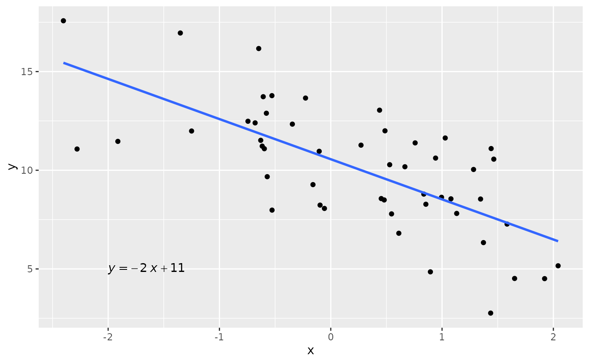

Simulação de dados com estrutura de regressão linear
Fábio N. Demarqui
Source:vignettes/simdata.Rmd
simdata.RmdVamos utilizar a função reglin::rlm() para gerar uma
amostra de
observações considerando o seguinte modelo de regressão linear
simples:
em que , , com .
# anexando os pacotes necessários:
library(reglin)
library(tidyverse)
library(ggpubr)
# fixando a semente:
set.seed(1234567890)
n <- 50
sigma <- 2
beta <- c(10, -2)
simdata <- data.frame(x=rnorm(n))
simdata <- simdata |>
mutate(
y = rlm(~x, beta = beta, sigma = sigma)
)
glimpse(simdata)
#> Rows: 50
#> Columns: 2
#> $ x <dbl> 1.34592454, 0.99527131, 0.54622688, -1.91272392, 1.92128431, 1.37191…
#> $ y <dbl> 8.542454, 8.630938, 7.789636, 11.463493, 4.508771, 6.334617, 11.9887…O diagrama de dispersão entre e , fundamental para a verificação da existência de relação linear entre essas variáveis, pode ser obtido da seguinte forma:
# plotando o diagrama de dispersão:
ggplot(simdata, aes(x=x, y=y)) +
geom_point() +
geom_smooth(method = "lm", se = FALSE) +
stat_regline_equation(label.x = -2, label.y = 5, aes(label = after_stat(eq.label)))
#> `geom_smooth()` using formula = 'y ~ x'
Os coeficientes estimados são apresentados a seguir:
fit <- lm(y~x, data = simdata) # ajustando o modelo
coef(fit) # extraíndo os coeficientes estimados
#> (Intercept) x
#> 10.560012 -2.034083Agora vamos utilizar a função reglin::rlm() para gerar
dados de um delineamento com 2 fatores fixos cruzados e n
replicações.
set.seed(1234567890)
n <- 4 # número de réplicas
sigma <- 0.1
fatores <- expand.grid(
A = rep(paste0("a", 1:3), each = n),
B = rep(paste0("b", 1:3), each = 1)
)
dim(fatores)
#> [1] 36 2
glimpse(fatores)
#> Rows: 36
#> Columns: 2
#> $ A <fct> a1, a1, a1, a1, a2, a2, a2, a2, a3, a3, a3, a3, a1, a1, a1, a1, a2, …
#> $ B <fct> b1, b1, b1, b1, b1, b1, b1, b1, b1, b1, b1, b1, b2, b2, b2, b2, b2, …
# visualizando a matriz do modelo:
unique(model.matrix(~A*B, fatores))
#> (Intercept) Aa2 Aa3 Bb2 Bb3 Aa2:Bb2 Aa3:Bb2 Aa2:Bb3 Aa3:Bb3
#> 1 1 0 0 0 0 0 0 0 0
#> 5 1 1 0 0 0 0 0 0 0
#> 9 1 0 1 0 0 0 0 0 0
#> 13 1 0 0 1 0 0 0 0 0
#> 17 1 1 0 1 0 1 0 0 0
#> 21 1 0 1 1 0 0 1 0 0
#> 25 1 0 0 0 1 0 0 0 0
#> 29 1 1 0 0 1 0 0 1 0
#> 33 1 0 1 0 1 0 0 0 1
beta <- c(
mu = 10, a2 = 2, a3=-0.5, b2 = 0.5, b3 = -1.5,
ab22 = -1, ab32 = -0.5, ab23 = 0.7, ab33 = -0.3
)
simdata1 <- fatores |>
mutate(
y = rlm(~A*B, beta = beta, sigma = sigma)
)
glimpse(simdata1)
#> Rows: 36
#> Columns: 3
#> $ A <fct> a1, a1, a1, a1, a2, a2, a2, a2, a3, a3, a3, a3, a1, a1, a1, a1, a2, …
#> $ B <fct> b1, b1, b1, b1, b1, b1, b1, b1, b1, b1, b1, b1, b2, b2, b2, b2, b2, …
#> $ y <dbl> 10.134592, 10.099527, 10.054623, 9.808728, 12.192128, 12.137191, 11.…
# ajustando o modelo:
fit <- aov(y ~ A*B, data = simdata1)
summary(fit)
#> Df Sum Sq Mean Sq F value Pr(>F)
#> A 2 47.99 23.993 2452.13 < 2e-16 ***
#> B 2 14.58 7.292 745.27 < 2e-16 ***
#> A:B 4 3.42 0.856 87.44 4.77e-15 ***
#> Residuals 27 0.26 0.010
#> ---
#> Signif. codes: 0 '***' 0.001 '**' 0.01 '*' 0.05 '.' 0.1 ' ' 1
# conferindo os coeficintes estimados:
cbind(beta, coef(fit))
#> beta
#> mu 10.0 10.0243675
#> a2 2.0 2.0387041
#> a3 -0.5 -0.5906028
#> b2 0.5 0.5006331
#> b3 -1.5 -1.4990425
#> ab22 -1.0 -0.9626672
#> ab32 -0.5 -0.4139756
#> ab23 0.7 0.7071688
#> ab33 -0.3 -0.1965599Agora vamos gerar os dados considerando uma parametrização diferente, utilizando uma restrição diferente para a criação dos contrastes da matriz do modelo:
simdata2 <- fatores |>
mutate(
y = rlm(~A*B, beta = beta, sigma = sigma, contrasts = list(A = "contr.sum", B = "contr.sum"))
)
glimpse(simdata2)
#> Rows: 36
#> Columns: 3
#> $ A <fct> a1, a1, a1, a1, a2, a2, a2, a2, a3, a3, a3, a3, a1, a1, a1, a1, a2, …
#> $ B <fct> b1, b1, b1, b1, b1, b1, b1, b1, b1, b1, b1, b1, b2, b2, b2, b2, b2, …
#> $ y <dbl> 11.545358, 11.259804, 11.643654, 11.447259, 9.527187, 9.272073, 9.43…
att <- attributes(simdata2$y)
unique(att$model.matrix)
#> (Intercept) A1 A2 B1 B2 A1:B1 A2:B1 A1:B2 A2:B2
#> 1 1 1 0 1 0 1 0 0 0
#> 5 1 0 1 1 0 0 1 0 0
#> 9 1 -1 -1 1 0 -1 -1 0 0
#> 13 1 1 0 0 1 0 0 1 0
#> 17 1 0 1 0 1 0 0 0 1
#> 21 1 -1 -1 0 1 0 0 -1 -1
#> 25 1 1 0 -1 -1 -1 0 -1 0
#> 29 1 0 1 -1 -1 0 -1 0 -1
#> 33 1 -1 -1 -1 -1 1 1 1 1